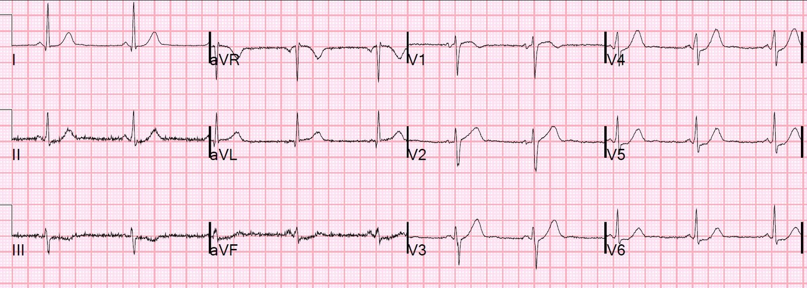
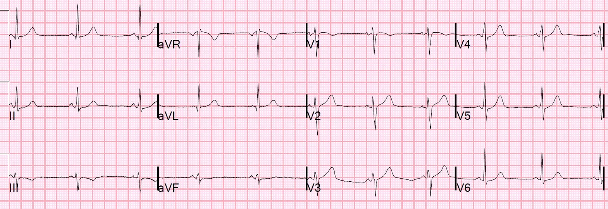
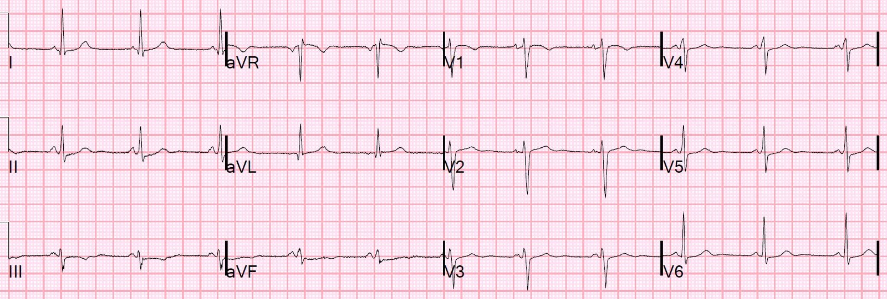
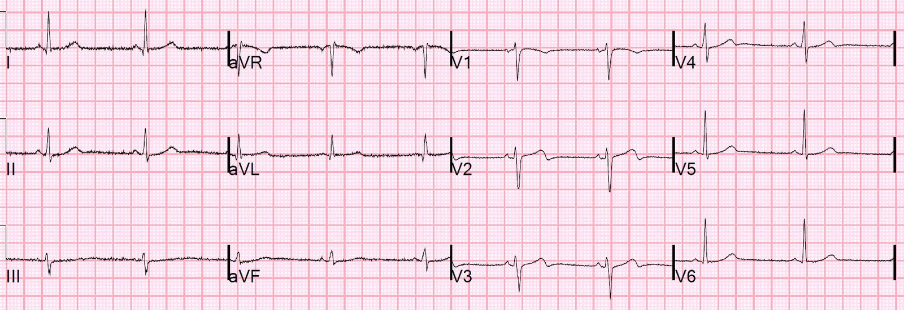
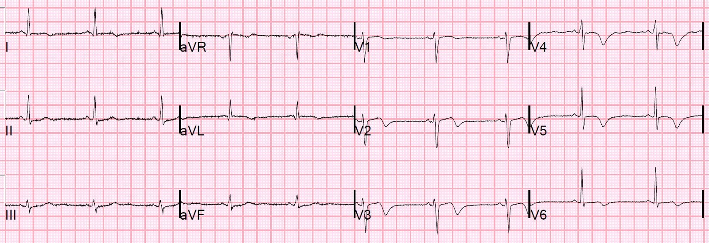
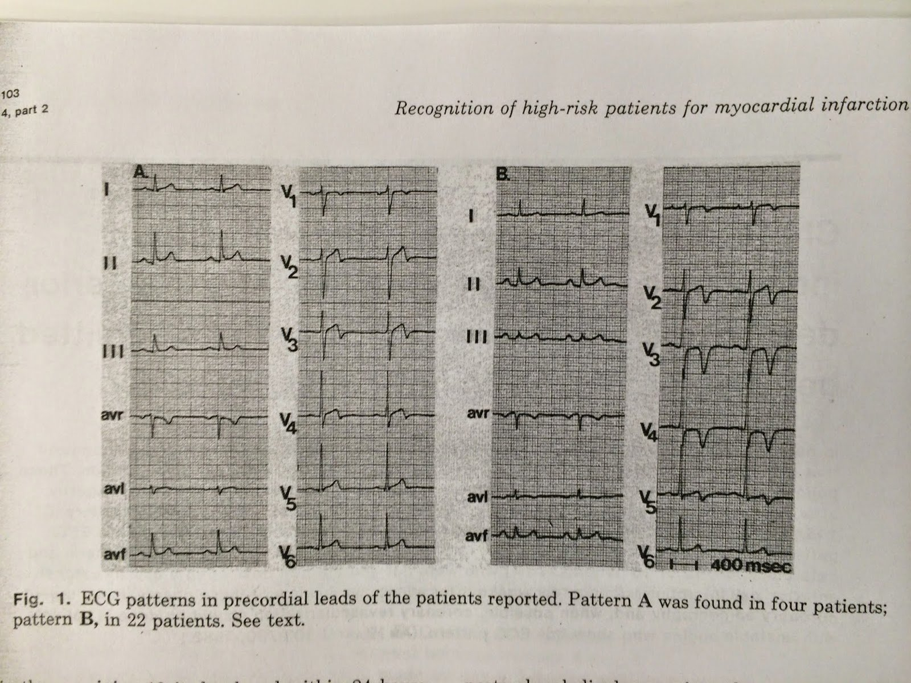
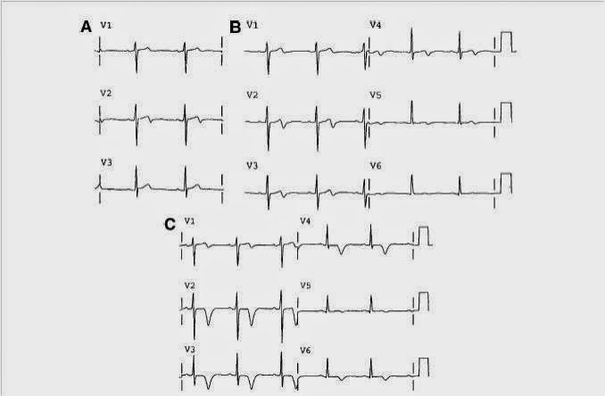
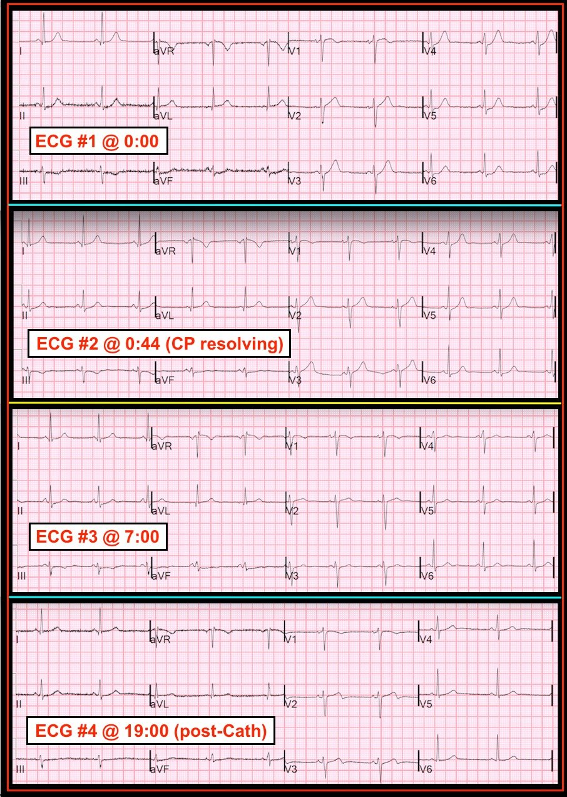

31/07/2018 — Một phụ nữ 30 mấy tuổi chơi thể thao bị cảm giác đè nặng ngực sau xương ức cấp tính
Bản dịch tiếng Việt của bài "An athletic 30-something woman with acute substernal chest pressure" – Dr. Smith’s ECG Blog. Giữ nguyên toàn bộ 10 hình ảnh của bản gốc.
Bài đăng của Smith, kèm một bài viết ngắn của Angie Lobo (https://twitter.com/ALoboMD), bác sĩ nội trú nội khoa năm thứ ba tại Bệnh viện Abbott Northwestern
Ca bệnh
Một phụ nữ 30 mấy tuổi, không có tiền sử bệnh, rất khỏe mạnh và năng động thể thao, đến khám vì cảm giác đè nặng ngực sau xương ức đã 1,5 giờ. Cơn đau không lan và không kèm triệu chứng nào khác ngoài buồn nôn. Bà không có bất kỳ yếu tố nguy cơ bệnh động mạch vành (CAD) nào.
Đây là điện tâm đồ của bà ở mốc thời gian ban đầu (time zero):


Có ST chênh lên ở V2 kèm sóng T lớn, "đầy đặn". Có ST chênh xuống ở II, III và aVF, và từ V3 đến V6.
Tôi xem điện tâm đồ này trước khi có bất kỳ thông tin nào khác và biết ngay lập tức rằng nó biểu hiện tắc LAD.
Có ST chênh lên (STE) 1 mm ở chuyển đạo V2. Điều này phải được giải thích, và thông thường sẽ được giải thích là “biến thể bình thường” hoặc “tái cực sớm”. Tuy nhiên, biến thể bình thường không bao giờ kèm ST chênh xuống, mà ở đây ta thấy ST chênh xuống ở II, III, aVF và V3-V6. Hơn nữa, có sóng T lớn, "đầy đặn" ở V2 và V3. Sóng T ở V3-V6 là sóng T “de Winter” kín đáo (ST chênh xuống rồi tiếp theo là sóng T dương lớn).
Các bác sĩ kể với tôi rằng họ “biết có điều gì đó không ổn” trên điện tâm đồ, nhưng không diễn đạt được chính xác đó là gì.
Cơn đau đang giảm dần sau khi dùng nitroglycerin thì điện tâm đồ này được ghi ở thời điểm 44 phút:


Sóng T nhỏ hơn
Các bác sĩ cũng không nhận ra điều này. Nhưng đây chính là điều bạn cần tìm nếu bạn ghi điện tâm đồ sau khi hết đau!! Bạn PHẢI tìm nó. Và rồi nếu bạn thấy nó, nó phải khiến bạn nhận ra rằng bạn đã bỏ sót ST chênh xuống và sóng T tối cấp trên điện tâm đồ đầu tiên.
Bước xử trí tiếp theo?
Nếu bạn đã không kích hoạt phòng thông tim dựa trên điện tâm đồ đầu tiên, thì bây giờ bạn thực sự nên cân nhắc nghiêm túc điều đó. Bệnh nhân này rõ ràng có một tổn thương LAD không ổn định, đã có lúc bị tắc hoặc gần tắc. Điều này tương đương với một STEMI thoáng qua. Lúc đó đã là tối muộn và bệnh nhân sẽ nằm viện qua đêm với một tổn thương LAD có thể rất không ổn định.
Troponin I lần đầu trả về 0,022 ng/mL (URL bách phân vị 99% = 0,030 ng/mL)
Do không nhận ra các dấu hiệu trên điện tâm đồ, các bác sĩ điều trị đã trao đổi với bà về nguy cơ rất thấp của bà và hỏi bà muốn về nhà rồi tái khám nếu troponin lần 2 vẫn âm tính, hay nhập viện theo dõi.
Bà cảm thấy yên tâm hơn khi được nhập viện.
Các diễn biến sau đó:
Sau đó, trước khi được đưa về phòng bệnh, troponin lần 2 trả về 1,01 ng/mL. Kết quả này đủ chẩn đoán nhồi máu cơ tim.
Đã bắt đầu dùng heparin, nhưng có vẻ như không có trao đổi nào về việc kích hoạt phòng thông tim.
Khoảng 3 giờ sau khi nhập viện, ngay sau nửa đêm, bà có một loạt nhịp nhanh thất không bền bỉ (NSVT) dài 30 nhát.
Họ ghi điện tâm đồ thứ 3 ở thời điểm 7 giờ:


Không còn ST chênh lên ở V2 nữa
Vẫn còn một chút ST chênh xuống.
Vào khoảng thời gian này, troponin lần 4, lấy lúc 8 giờ sau khởi phát đau, đạt đỉnh 20,956 ng/mL.
(Với những ai đã quen với đơn vị của troponin độ nhạy cao (ng/L), giá trị này tương đương 20.956,00 ng/L.)
Lúc này bạn đã có bằng chứng thiếu máu cục bộ trên điện tâm đồ và troponin, VÀ có rối loạn nhịp thất, nghĩa là đây KHÔNG phải một hội chứng vành cấp (ACS) ổn định.
Một lần nữa, phòng thông tim không được kích hoạt.
Mức troponin này có ý nghĩa gì? Không nhiều, nhưng các nghiên cứu về STEMI và NonSTEMI cho thấy khoảng 70% người được chẩn đoán STEMI có troponin I đỉnh trên 10 ng/mL và khoảng 70% người được chẩn đoán NonSTEMI có troponin I đỉnh dưới 10 ng/mL. Mức tăng troponin phụ thuộc vào việc có hay không có tắc mạch (hãy nhớ rằng nhiều OMI nhận chẩn đoán NSTEMI), thời gian tắc (vốn phụ thuộc vào tốc độ điều trị hoặc sự may mắn có tái tưới máu tự phát), diện tích vùng cơ tim nguy cơ, tuần hoàn bàng hệ, và nhiều yếu tố khác.
Ca bệnh tiếp diễn
May mắn là bệnh nhân vẫn ổn định. Ngày hôm sau, bệnh nhân được đưa đi chụp mạch vành và phát hiện một tổn thương LAD đã tái tưới máu với dòng chảy tốt, mà bác sĩ chụp mạch nhận định trông như một bóc tách động mạch vành tự phát. Có vẻ như vẫn còn đôi chút chưa chắc chắn về điều này. Tổn thương được đặt stent.
Điện tâm đồ ở thời điểm 19 giờ sau thông tim:


Đây là sóng T tái tưới máu (cũng chính là sóng Wellens)
Siêu âm tim
Rối loạn vận động thành khu trú - phần xa vách liên thất và mỏm.
Rối loạn vận động thành khu trú - phần xa thành dưới.
Điện tâm đồ ghi ở thời điểm 38 giờ:


Đã vượt qua kiểu A nhưng chưa hẳn là kiểu B.
Xem các ví dụ về kiểu A và kiểu B ở cuối cùng của bài đăng này
Mọi ST chênh lên và/hoặc sóng T tối cấp do thiếu máu cục bộ đều tiến triển. Bằng chứng tốt nhất cho thấy ST chênh lên hoặc sóng T lớn là do thiếu máu cục bộ đến từ các điện tâm đồ tiếp theo. Nếu chúng không thay đổi, thì chúng không phải do thiếu máu cục bộ.
ST chênh lên do thiếu máu cục bộ sẽ tăng lên, giảm đi, hoặc hồi phục. Sóng T tối cấp sẽ lớn hơn, nhỏ hơn, trở về bình thường, hoặc đảo ngược.
Đây là bằng chứng thiếu máu cục bộ tốt hơn bất kỳ dữ kiện nào khác. Rối loạn vận động thành có thể biến mất khi tái tưới máu nhanh. Chụp mạch vành có thể âm tính do co thắt, do huyết khối tự tiêu, hoặc do bệnh mạch máu nhỏ, hoặc đó có thể là nhồi máu cơ tim típ 2. Troponin có thể âm tính khi tái tưới máu rất nhanh, hoặc khi được đo quá muộn, hoặc tăng mạn tính do bệnh cơ tim hay suy thận. Nhưng điện tâm đồ, nếu có một dấu hiệu là hậu quả của thiếu máu cục bộ cấp, (và không phải lúc nào cũng có), sẽ thay đổi động. Nếu các dấu hiệu điện tâm đồ là do một bệnh lý mạn tính có từ trước, hoặc do biến thể bình thường, chúng gần như luôn tương đối không thay đổi trong vòng 48 giờ.
Bóc tách động mạch vành tự phát (SCAD) là gì?
Tôi đã nhờ Angie Lobo (https://twitter.com/ALoboMD), bác sĩ nội trú nội khoa năm thứ ba tại Bệnh viện Abbott Northwestern (và Viện Tim Minneapolis), người đang theo đuổi chuyên ngành tim mạch, viết vài đoạn về SCAD. Cô ấy đã nghiên cứu khá nhiều về chủ đề này.
Bóc tách động mạch vành tự phát
Bóc tách
động mạch vành tự phát (SCAD) là một nguyên nhân ít gặp nhưng ngày càng được nhận biết nhiều hơn
của hội chứng vành cấp (1- 4%) 1, thường gặp nhất ở phụ nữ (90%)
2. Ở phụ nữ trung niên, SCAD chiếm 22-35% tổng số trường hợp
hội chứng vành cấp 1,3, và tỷ lệ nhồi máu cơ tim ST chênh lên
được báo cáo trong nhóm bệnh nhân này thay đổi, nhưng ước tính
vào khoảng 24-50%4. SCAD là một thể hội chứng vành cấp không do xơ vữa, không do thầy thuốc
và không do chấn thương, được định nghĩa là một vết bóc tách xảy ra trong thành
của một hoặc nhiều động mạch vành (LAD là động mạch bị ảnh hưởng thường gặp nhất 2),
dẫn đến tắc nghẽn lòng mạch do hình thành khối máu tụ trong thành mạch
(IMH) hoặc rách nội mạc chứ không phải do nứt vỡ mảng xơ vữa
hay huyết khối trong lòng mạch 2. SCAD xảy ra ở những bệnh nhân có ít yếu tố nguy cơ tim mạch hoặc có
yếu tố nguy cơ tim mạch không truyền thống. Đã có nhiều yếu tố được ghi nhận liên quan với
SCAD có thể tạo thuận lợi cho thành động mạch bị suy yếu, trong đó loạn sản xơ cơ
(FMD) và thai kỳ là thường gặp nhất 2,5.
Chưa có thử nghiệm ngẫu nhiên có đối chứng
nào về các chiến lược điều trị SCAD. Đồng thuận hiện hành của Hội Tim mạch Hoa Kỳ
(AHA) khuyến cáo cách tiếp cận bảo tồn (tránh các biện pháp điều trị xâm lấn)
ở bệnh nhân ổn định huyết động có dòng chảy TIMI tốt. Các biện pháp điều trị xâm lấn,
như can thiệp mạch vành qua da (PCI) hoặc phẫu thuật bắc cầu
chủ vành (CABG), nên dành cho bệnh nhân có thiếu máu cục bộ đang tiếp diễn, bóc tách
thân chung động mạch vành trái, hoặc mất ổn định huyết động 6. Việc nghi ngờ SCAD ở nhóm bệnh nhân này (đặc biệt là phụ nữ) có tầm quan trọng
đặc biệt để
đưa ra cách xử trí thích hợp (tránh xử trí như hội chứng vành cấp do xơ vữa,
tránh chiến lược xâm lấn không cần thiết) và giảm tỷ lệ biến chứng.
1.
Nishiguchi
T, Tanaka A, Ozaki Y, Taruya A, Fukuda S, Taguchi H, Iwaguro T, Ueno S, Okumoto
Y, Akasaka T. Prevalence of spontaneous coronary artery dissection in
patients with acute coronary syndrome. Tạp chí Eur Heart J Acute Cardiovasc Care.
2016;5:263–270. doi: 10.1177/2048872613504310.
2. Tweet
MS, Hayes SN, Pitta SR, Simari RD, Lerman A, Lennon RJ, Gersh BJ,
Khambatta S, Best PJ, Rihal CS, Gulati R. Clinical features, management,
and prognosis of spontaneous coronary artery dissection. Tạp chí Circulation.
2012;126:579–588. doi: 10.1161/CIRCULATIONAHA.112.105718.
3.
Nakashima
T, Noguchi T, Haruta S, Yamamoto Y, Oshima S, Nakao K, Taniguchi Y, Yamaguchi
J, Tsuchihashi K, Seki A, Kawasaki T, Uchida T, Omura N, Kikuchi M, Kimura K,
Ogawa H, Miyazaki S, Yasuda S. Prognostic impact of spontaneous coronary
artery dissection in young female patients with acute myocardial infarction: a
report from the Angina Pectoris-Myocardial Infarction Multicenter
Investigators in Japan. Tạp chí Int J Cardiol. 2016;207:341–348. doi:
10.1016/j.ijcard.2016.01.188.
4.
Saw
J, Mancini GBJ, Humphries KH. Contemporary review on spontaneous coronary
artery dissection. Tạp chí J Am Coll Cardiol. 2016;68:297–312. doi:
10.1016/j.jacc.2016.05.034.
5.
Saw
J, Poulter R, Fung A, Wood D, Hamburger J, Buller CE. Spontaneous coronary
artery dissection in patients with fibromuscular dysplasia: a case series. Tạp chí Circ
Cardiovasc Interv. 2012;5:134–137. doi: 10.1161/ CIRCINTERVENTIONS.111.966630.
6.
Hayes,
S.N., Kim, E.S., Saw, J., Adlam, D., Arslanian-Engoren, C., Economy, K.E.,
Ganesh, S.K., Gulati, R., Lindsay, M.E., Mieres, J.H. và Naderi, S., 2018.
Spontaneous coronary artery dissection: Current state of the Science: A
scientific statement from the American Heart Association. Tạp chí Circulation, 137(19),
tr. e523.
doi:10.1161/cir.0000000000000564.
Thêm về sóng T Wellens kiểu A và kiểu B
Từ bài báo gốc:


Tôi không nghĩ đã có ai từng viết một bài báo có bình duyệt về điều này, nhưng qua kinh nghiệm lâu năm và qua y văn về điều trị tái tưới máu trong nhồi máu cơ tim cấp, tôi tin điều này là đúng. Điều đó chỉ được xác lập khi có nhiều điện tâm đồ.
Xem bài đăng này: Classic Evolution of Wellens’ T-waves over 26 hours
Đây là một bệnh nhân, với điện tâm đồ ghi ở mốc thời gian ban đầu (time zero) sau khi hết đau, rồi ở thời điểm 2 giờ, rồi ở thời điểm 9 giờ. Từ lâu tôi đã nhận ra rằng Wellens là một hình ảnh tái tưới máu và kiểu A xuất hiện sớm rồi tiến triển thành kiểu B.



=====================================
BÌNH LUẬN CỦA TÔI, bởi KEN GRAUER, MD (31/7/2018):
=====================================
Theo kinh nghiệm của tôi, những ca điện tâm đồ mang tính giáo dục nhất là những ca gồm các bản ghi liên tiếp kèm ghi chú đồng thời ở từng thời điểm khi ca bệnh diễn tiến. Những bài học MẤU CHỐT cần rút ra trong ca này không thể được giảng dạy một cách tách rời. Để tiện bàn luận — tôi đã đặt 4 bản ghi liên tiếp đầu tiên của ca này cùng nhau trong Hình 1.
- Hồ sơ bệnh nhân trong ca này dễ gây đánh lừa = một phụ nữ 30 tuổi có vẻ khỏe mạnh, năng động thể thao và rất khỏe, không có yếu tố nguy cơ và không có tiền sử bệnh lý đáng kể. “Bài học” thứ 1 là, “Mọi giả định đều không còn giá trị” — khi một người trưởng thành ở bất kỳ độ tuổi nào đến khoa cấp cứu (ED) vì khó chịu ở ngực mới khởi phát.
- ĐIỂM THEN CHỐT (PEARL): Khi các dấu hiệu điện tâm đồ kín đáo — Hãy tìm các dấu hiệu kín đáo ở nhiều chuyển đạo! Dù khi đọc đến Bình luận của tôi, bạn đã biết kết cục của ca này — hãy QUAY LẠI và Xem lại một lần nữa điện tâm đồ ban đầu @ Thời điểm = 0:00 (bản ghi TRÊN CÙNG trong Hình 1). Có bao nhiêu chuyển đạo cho thấy dấu hiệu ST-T bất thường trên điện tâm đồ #1?


TRẢ LỜI: Ngoại trừ aVR — mọi chuyển đạo trên điện tâm đồ #1 đều có thay đổi ST-T bất thường:
- Dr. Smith đã mô tả ST chênh lên ở chuyển đạo V2, kèm sóng T "đầy đặn" hơn dự kiến ở V2 và V3. Ông cũng ghi nhận hình ảnh kín đáo của sóng T de Winter ở các chuyển đạo từ V3 đến V6 ( = ST chênh xuống ở mỗi chuyển đạo này, tiếp theo là đi lên thành sóng T lớn hơn dự kiến).
- Ngoài ra còn có ST dạng vòm (coving) và chênh lên ở chuyển đạo V1. Dù ST dạng vòm ở V1 không nhất thiết là bất thường — sự hiện diện của ST chênh lên kèm các bất thường ST-T ở V2,V3 ở một bệnh nhân đau ngực rõ ràng là lý do đáng lo ngại.
- Như Dr. Smith đã nêu — mỗi chuyển đạo thành dưới (II,III,aVF) đều có bất thường ST-T. Như thường gặp khi thấy thay đổi ST-T soi gương ở các chuyển đạo thành dưới — những thay đổi kín đáo nhất thường thấy ở chuyển đạo II. Mức ST chênh xuống ở chuyển đạo II của điện tâm đồ #1 là rất ít — nhưng — đoạn ST ở chuyển đạo này “trông có vẻ chênh xuống” (do đoạn ST dẹt nằm ngang dạng bậc thềm, với chỗ chuyển tiếp đột ngột từ cuối đoạn ST sang đầu sóng T). Nếu hình ảnh bất thường kín đáo-nhưng-có-thật này ở ST-T của chuyển đạo II trên điện tâm đồ #1 còn xa lạ với bạn — hãy Ghi nhớ hình dạng ST-T ở chuyển đạo II!
- Có ST chênh lên ở chuyển đạo aVL. Một lần nữa, mức ST chênh lên ở aVL là rất ít — nhưng tầm quan trọng của việc nhận ra sóng T kiểu de Winter ở các chuyển đạo ngực của một bệnh nhân khó chịu ở ngực mới khởi phát và thay đổi ST-T soi gương ở cả 3 chuyển đạo thành dưới, và ít nhất một mức ST chênh lên ở chuyển đạo aVL — là sự kết hợp của các dấu hiệu này gợi ý một biến cố cấp đang diễn ra, và khu trú tổn thương ở đoạn gần LAD.
- Cuối cùng — đoạn ST ở chuyển đạo I của điện tâm đồ #1 thẳng một cách bất thường. Điều này giải thích chỗ chuyển tiếp khá đột ngột giữa cuối đoạn ST và đầu sóng T ở chuyển đạo này.
- LƯU Ý: Không dấu hiệu nào ở trên khi đứng riêng lẻ là đủ chẩn đoán. Nhưng khi xét chung — hình ảnh trên điện tâm đồ #1 với các bất thường ST-T kín đáo-nhưng-có-thật ở 11/12 chuyển đạo ở một người trưởng thành khó chịu ở ngực mới khởi phát phải gợi ý tắc mạch vành cấp cho đến khi bạn chứng minh được điều ngược lại.
Như Dr. Smith đã nhấn mạnh — cách tốt nhất để chứng minh thiếu máu cục bộ cấp là xác định được thay đổi ST-T động đi kèm với thay đổi về tính chất đau ngực. Điều này thường đòi hỏi so sánh cẩn thận từng chuyển đạo giữa các bản ghi liên tiếp.
- Hãy xem lại một lần nữa Hình 1. Có bao nhiêu chuyển đạo cho thấy khác biệt khi so sánh hình dạng ST-T trên điện tâm đồ #1 với trên điện tâm đồ #2?
- NHỮNG ĐIỂM CHÍNH: Thay đổi ST-T trên các bản ghi liên tiếp có thể cực kỳ kín đáo. Trước tiên, hãy đánh giá xem trục mặt phẳng trán và trình tự tăng tiến sóng R qua các chuyển đạo ngực có giống nhau giữa 2 bản ghi bạn đang so sánh hay không — vì khác biệt đáng kể ở một trong hai yếu tố này có thể khiến việc so sánh chính xác các bản ghi liên tiếp khó hơn nhiều. Hãy đi từng chuyển đạo — so sánh hình dạng chuyển đạo I trên cả hai bản ghi; rồi chuyển đạo II trên cả hai bản ghi; rồi chuyển đạo III … và cứ thế. Vì các khác biệt có thể rất kín đáo — bạn thường tìm một ấn tượng “tổng thể” (Gestalt) ( = chung) xem có khác biệt về chất giữa 2 điện tâm đồ hay không.
=============================
NHẬN ĐỊNH CỦA CHÚNG TÔI: So sánh từng chuyển đạo giữa điện tâm đồ #1 và #2, theo tôi, gợi ý rằng ngoại trừ chuyển đạo III (nơi sóng T đảo ngược nông trông giống nhau trên cả hai bản ghi) — có cải thiện nhẹ ở hầu như tất cả các chuyển đạo khác. Do cơn đau ngực đang giảm vào thời điểm ghi điện tâm đồ #2 — điều này ủng hộ khái niệm thay đổi ST-T động ở bệnh nhân này.
Bây giờ hãy so sánh điện tâm đồ #3 với 2 bản ghi đầu tiên:
- Khi xem riêng lẻ — các thay đổi ST-T trên điện tâm đồ #3 không hơn gì thay đổi không đặc hiệu. Nhưng khi xem xét trong bối cảnh (tức là, biết rằng bản ghi này được ghi 7 giờ sau điện tâm đồ #1) — chúng ủng hộ một cách không còn nghi ngờ khái niệm thay đổi ST-T động đang tiếp diễn ở bệnh nhân đến viện với triệu chứng cấp này.
Thông tim thực hiện ngày hôm sau cho thấy một tổn thương LAD đã tái tưới máu, được cho là do bóc tách động mạch vành tự phát. Như Dr. Smith đã nêu — điện tâm đồ #4 cho thấy sự tiến triển thành hình ảnh điện tâm đồ phù hợp với sóng T Wellens kiểu A (tức là, ST-T đặc trưng bởi sóng T đảo ngược phần cuối ở các chuyển đạo V2 và V3).
- Vì điện tâm đồ #4 được ghi sau khi nhồi máu đã xảy ra (và ngay sau khi thông tim cho thấy tổn thương “thủ phạm” đã được tái tưới máu) — chúng tôi xác định hình dạng ST-T ở các chuyển đạo ngực của bản ghi này là phù hợp với sóng T tái tưới máu.
- Nhưng, NẾU bệnh sử đi kèm điện tâm đồ #4 khác đi — ý nghĩa lâm sàng của các dấu hiệu điện tâm đồ này có thể thay đổi đáng kể. Ví dụ, hãy hình dung bệnh nhân này đã đau ngực vài giờ vào ngày trước khi đến khoa cấp cứu — nhưng mọi cơn đau ngực đã hết vào lúc đến viện — và, thay vì điện tâm đồ #1 là bản ghi ban đầu của bà, thì điện tâm đồ #4 mới là bản ghi ban đầu. Nếu là như vậy, hình dạng sóng ST-T ở các chuyển đạo giữa ngực của điện tâm đồ #4 sẽ phù hợp với “Hội chứng” Wellens — và sẽ là một chỉ điểm của tổn thương LAD đoạn gần khít, cần được tái thông mạch.